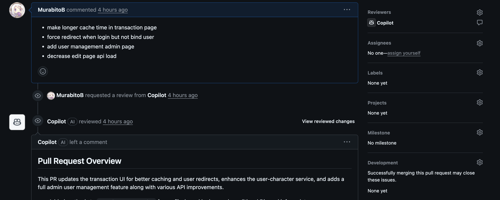

<!DOCTYPE html>
<html>
  <head>
    <meta charset="utf-8" />
    <meta
      name="viewport"
      content="width=device-width, initial-scale=1, maximum-scale=1, user-scalable=no"
    />
    <meta
      name="google-site-verification"
      content="cqX0KLojFnp_XLPXVqGxw_qUBybbxjMzqRSEKTh1NaI"
    />
    <!-- If containe conver than set og:image -->
    
    <meta name="og:image" content="https://murabitob.github.io/post/artale-market/cover.png" />
     
    <title>沒有官方拍賣的我們為了能夠順利玩遊戲自己架了第三方交易媒合系統(Artale Market) | MurabitoB&#39;Blog</title>

    <meta
      name="description"
      content="在 Artale 楓之谷拍賣系統重建遙遙無期的情況下，我們決定自己架設一個交易媒合系統，讓玩家能夠在沒有官方拍賣的情況下順利交易"
    />
    <meta name="keywords" content="" />

    

    <meta property="og:locale" content="zh-TW" />
    <meta property="og:type" content="article" />
    <meta property="og:title" content= "沒有官方拍賣的我們為了能夠順利玩遊戲自己架了第三方交易媒合系統(Artale Market) | MurabitoB&#39;Blog"  />
    <meta property="og:description" content= "在 Artale 楓之谷拍賣系統重建遙遙無期的情況下，我們決定自己架設一個交易媒合系統，讓玩家能夠在沒有官方拍賣的情況下順利交易" />
    <meta property="og:url" content="https://murabitob.github.io/post/artale-market.html" />
    <meta property="og:site_name" content="" />
    <meta property="article:author" content="MurabitoB" />
    <meta property="article:publisher" content="" />
    <meta property="og:description" content="在 Artale 楓之谷拍賣系統重建遙遙無期的情況下，我們決定自己架設一個交易媒合系統，讓玩家能夠在沒有官方拍賣的情況下順利交易" />
    <meta name="twitter:title" content="沒有官方拍賣的我們為了能夠順利玩遊戲自己架了第三方交易媒合系統(Artale Market) | MurabitoB&#39;Blog"/>
    <meta name="twitter:description" content="在 Artale 楓之谷拍賣系統重建遙遙無期的情況下，我們決定自己架設一個交易媒合系統，讓玩家能夠在沒有官方拍賣的情況下順利交易"/>
    <script type="application/ld+json">
        {
            "description": "在 Artale 楓之谷拍賣系統重建遙遙無期的情況下，我們決定自己架設一個交易媒合系統，讓玩家能夠在沒有官方拍賣的情況下順利交易",
            "author": { "@type": "Person", "name": "MurabitoB" },
            "@type": "BlogPosting",
            "url": "https://murabitob.github.io/post/artale-market.html",
            "publisher": {
            "@type": "Organization",
            "logo": {
                "@type": "ImageObject",
                "url": "https://murabitob.github.io/images/thumbnail.jpg"
            },
            "name": "MurabitoB"
            },
            "headline": "沒有官方拍賣的我們為了能夠順利玩遊戲自己架了第三方交易媒合系統(Artale Market) | MurabitoB&#39;Blog",
            "datePublished": "2025-07-12T11:00:00.000Z",
            "mainEntityOfPage": {
                "@type": "WebPage",
                "@id": "https://murabitob.github.io/post/artale-market.html"
            },
            "@context": "http://schema.org"
        }
    </script>


    
    <link rel="icon" href="/images/thumbnail.jpg" />
      
    <link rel="stylesheet" href="https://unpkg.com/gitalk/dist/gitalk.css" />
      
<link rel="stylesheet" href="/dist/build.css?v=1690288261467.css">
 
<link rel="stylesheet" href="/dist/custom.css?v=1690288261467.css">


    <script>
      window.isPost = true
      window.aomori = {
          
          gitalk: {
              enable: true,
              clientID: "2dbcfa1a9b799109cc68",
              clientSecret: "889d020c927ce43e47c00fcfe18d20ad13ead0e1",
              repo: "MurabitoB.github.io",
              owner: "MurabitoB",
              admin: ["MurabitoB",],
              distractionFreeMode: true  // Facebook-like distraction free mode
          },
          
          
          
      }
      window.aomori_logo_typed_animated = true
      window.aomori_search_algolia = false
    </script>
  <meta name="generator" content="Hexo 5.4.2"></head>
</html>


<body>
    <link href="https://fonts.googleapis.com/css?family=Noto+Sans+TC&display=swap&subset=chinese-traditional" rel="stylesheet">
    <div class="container">
    <header class="header">
        <div class="header-type">
            
            <div class="header-type-avatar avatar avatar-sm">
                
            </div>
            
            <div class="header-type-inner">
                
                    <div id="typed-strings" style="display:none">
                        <p>MurabitoB&#39;Blog</p>
                    </div>
                    <a class="header-type-title" id="typed" href="/"></a>
                
    
                
            </div>
        </div>
        <div class="header-menu">
            <div class="header-menu-inner">
                
                <a href="/">Home</a>
                
                <a href="/about">About</a>
                
            </div>
            <div class="header-menu-social">
                
    <a class="social" target="_blank" href="https://github.com/MurabitoB">
        <ion-icon name="logo-github"></ion-icon>
    </a>

            </div>
        </div>

        <div class="header-menu-mobile">
            <div class="header-menu-mobile-inner" id="mobile-menu-open">
                <i class="icon icon-menu"></i>
            </div>
        </div>
    </header>

    <div class="header-menu-mobile-menu">
        <div class="header-menu-mobile-menu-bg"></div>
        <div class="header-menu-mobile-menu-wrap">
            <div class="header-menu-mobile-menu-inner">
                <div class="header-menu-mobile-menu-close" id="mobile-menu-close">
                    <i class="icon icon-cross"></i>
                </div>
                <div class="header-menu-mobile-menu-list">
                    
                    <a href="/">Home</a>
                    
                    <a href="/about">About</a>
                    
                </div>
            </div>
        </div>
    </div>

</div>

    <div class="container">
        <div class="main">
            <section class="inner">
                <section class="inner-main">
                    <div class="post">
    <article id="post-cmd08v3s10000kwas7ssr1uwt" class="article article-type-post" itemscope
    itemprop="blogPost">

    <div class="article-inner">

        
          
        
        
        

        
        <header class="article-header">
            
  
    <h1 class="article-title" itemprop="name">
      沒有官方拍賣的我們為了能夠順利玩遊戲自己架了第三方交易媒合系統(Artale Market)
    </h1>
  

        </header>
        

        <div class="article-more-info article-more-info-post hairline">

            <div class="article-date">
  <time datetime="2025-07-12T11:00:00.000Z" itemprop="datePublished">2025-07-12</time>
</div>

            
            <div class="article-category">
                <a class="article-category-link" href="/categories/%E7%A8%8B%E5%BC%8F%E9%96%8B%E7%99%BC/">程式開發</a>
            </div>
            

            
            <div class="article-tag">
                <ul class="article-tag-list" itemprop="keywords"><li class="article-tag-list-item"><a class="article-tag-list-link" href="/tags/Side-Project/" rel="tag">Side Project</a></li></ul>
            </div>
            

            
            <div class="article-busuanzi">
                <span id="busuanzi_value_page_pv">N</span> 人看过
            </div>
            

        </div>

        <div class="article-entry post-inner-html hairline" itemprop="articleBody">
            <h2 id="前言"><a href="#前言" class="headerlink" title="前言"></a>前言</h2><p>大約在今年的五月初入坑了楓之谷世界上面的楓之谷懷舊服 - Artale，這遊戲上面有個內建的交易系統，可以讓玩家刊登物品來進行交易，但是這個系統在 5/15 的時候，因為效能問題而炸裂，官方決定暫停這個系統的運作，並宣稱會進行內部重構，時至今日已經過了兩個月，仍然還沒修復完成。</p>
<span id="more"></span>

<p><a target="_blank" rel="noopener" href="https://forum.gamer.com.tw/C.php?bsn=79354&snA=4623">玩家整理的事件懶人包</a></p>
<p>在這樣的情況下，我跟有在玩遊戲的朋友們決定自己架設一個交易媒合系統，讓玩家能夠在沒有官方拍賣的情況下順利交易。</p>
<p>從開發到上線，約花了五天的下班時間，全程透過 Github Copilot Agent Mode vibe coding 進行開發，成功在五天內上線 MVP。</p>
<p><strong>截圖版本非 MVP 版本</strong><br></p>
<h2 id="什麼是交易媒合系統？"><a href="#什麼是交易媒合系統？" class="headerlink" title="什麼是交易媒合系統？"></a>什麼是交易媒合系統？</h2><p>交易媒合系統是一個讓玩家可以刊登物品，並且讓其他玩家可以搜尋到這些物品的系統。這個系統不會直接處理交易，而是提供一個平台讓玩家可以互相聯繫，進行交易。</p>
<p>這種網站形式也不是我們發明的，在其他遊戲也有類似的系統，例如：</p>
<ul>
<li><a target="_blank" rel="noopener" href="https://mapleland.gg/">mapleland.gg</a></li>
<li><a target="_blank" rel="noopener" href="https://warframe.market/">warframe.market</a></li>
</ul>
<p></p>
<h2 id="初始成員"><a href="#初始成員" class="headerlink" title="初始成員"></a>初始成員</h2><table>
<thead>
<tr>
<th>名稱</th>
<th>角色</th>
</tr>
</thead>
<tbody><tr>
<td>我</td>
<td>工程師</td>
</tr>
<tr>
<td>朋友 A</td>
<td>客服 / 行銷 / PM</td>
</tr>
<tr>
<td>朋友 B</td>
<td>客服 / 金主爸爸(?)</td>
</tr>
</tbody></table>
<h2 id="技術選型"><a href="#技術選型" class="headerlink" title="技術選型"></a>技術選型</h2><p>因為只有我一位工程師，所以這個專案對我來說是 Side Project 的性質，一方面想挑戰一下用 vibe coding 去摸索一個我完全不熟悉的技術，另一方面因為有 SEO 的需求，所以選了完全沒摸過的 React + Next.js 作為主要技術棧，走 Serverless 部署，並且使用了以下技術：</p>
<table>
<thead>
<tr>
<th>技術類別</th>
<th>技術選擇</th>
</tr>
</thead>
<tbody><tr>
<td><strong>前 + 後端</strong></td>
<td>React + Next.js</td>
</tr>
<tr>
<td><strong>UI 框架</strong></td>
<td>Tailwind CSS + DaisyUI</td>
</tr>
<tr>
<td><strong>狀態管理</strong></td>
<td>zustand</td>
</tr>
<tr>
<td><strong>表單驗證</strong></td>
<td>zod + react-hook-form</td>
</tr>
<tr>
<td><strong>資料擷取</strong></td>
<td>swr + axios</td>
</tr>
<tr>
<td><strong>認證</strong></td>
<td>NextAuth.js + Discord OAuth</td>
</tr>
</tbody></table>
<h2 id="vibe-coding-踩坑紀錄"><a href="#vibe-coding-踩坑紀錄" class="headerlink" title="vibe coding 踩坑紀錄"></a>vibe coding 踩坑紀錄</h2><p>最一開始，我沒有給他任何 Reference，就直接開始開發，這樣的 vibe coding 方式讓我在開發過程中遇到了一些問題：</p>
<ol>
<li><strong>AI 在你沒給參照的時候，他不會去考慮用套件解決問題</strong>：<ul>
<li>寫表單功能的時候，AI 只會給我一個基本的表單結構，並不會主動去優化代碼，例如使用 <code>react-hook-form</code> ，也不會主動去使用 <code>zod</code> 進行表單驗證</li>
<li>寫 API 請求的時候，AI 只會給我一個基本的請求邏輯，並不會主動去優化代碼，例如使用 <code>axios</code> 及 <code>swr</code> 來進行資料請求／快取</li>
</ul>
</li>
<li><strong>最好認真 Review AI 所寫的後端代碼</strong>：<ul>
<li>AI 設計 DB Schema 的時候，不一定會考量到正確的 index 設定，這會導致資料庫查詢效能不佳</li>
<li>如果你的資料有配置外鍵，並且你在商業邏輯上允許 <code>Cascade Delete</code>，最好在需求上寫清楚</li>
<li>明確規範變數的 <code>naming convention</code>，例如 <code>snake_case</code> 或 <code>camelCase</code>，這樣 AI 才能夠一致地使用，在這個專案上，前後端都是 React + Next.js 但是 AI 在生成代碼的時候，還是給了後端使用 <code>snake_case</code> 以及前端使用 <code>camelCase</code> 的變數命名方式，這讓我在處理資料時需要額外處理轉換</li>
<li>明確定義時間格式，這樣 AI 才能夠一致地使用，在這個專案上，例如直接在文檔標注使用 <code>ISO 8601</code> 時間格式，這樣 AI 才能夠一致地使用</li>
</ul>
</li>
</ol>
<p>因為前面踩了一堆坑，所以後來研究發現 github copilot 可以指定 <a target="_blank" rel="noopener" href="https://docs.github.com/en/copilot/how-tos/custom-instructions/adding-repository-custom-instructions-for-github-copilot">copilot-instructions</a> 這個文檔，這樣每次 AI 生成代碼的時候，都會參考這個文檔，可以避免前面提到的問題。</p>
<h2 id="交易媒合系統是如何運作的？"><a href="#交易媒合系統是如何運作的？" class="headerlink" title="交易媒合系統是如何運作的？"></a>交易媒合系統是如何運作的？</h2><p>因為剛好有 Youtuber 介紹我們的系統，所以我就直接貼連結</p>
<iframe width="560" height="315" src="https://www.youtube.com/embed/MtJcDHSH184?start=153" title="【楓之谷世界 Artale】沒有拍賣的替代方案！手把手教您如何找到玩家買賣！｜不確定裝備價格？這個網頁帶您快速查價！｜拍賣補償＆官方公告＆市價查詢＆裝備素質＆新手教學｜基德薯叔" frameborder="0" allow="accelerometer; autoplay; clipboard-write; encrypted-media; gyroscope; picture-in-picture; web-share" referrerpolicy="strict-origin-when-cross-origin" allowfullscreen></iframe>

<p>簡單來說：</p>
<ol>
<li>玩家可以在系統上刊登物品，並且設定價格</li>
<li>其他玩家可以在系統上搜尋物品，並且聯繫刊登者進行交易</li>
<li>玩家看到有興趣的道具，可以直接點擊聯繫按鈕<ul>
<li>這個按鈕會直接開啟 Discord 的私訊對話，並且透過定型文帶入預設的訊息內容，讓玩家可以快速聯繫刊登者</li>
</ul>
</li>
<li>在 Discord 私訊對話中，玩家可以進行交易協商，並且約定交易時間</li>
<li>當交易完成後，玩家可以在系統上標記交易完成，<ul>
<li>這樣其他玩家就可以看到這個物品已經被交易完成，並且將交易結果顯示在完成的交易列表中</li>
<li>每日的排程會自動統計交易完成量最多的 100 種物品，並且將這些物品的交易次數顯示在首頁的今日物價指數列表</li>
</ul>
</li>
</ol>
<p><strong>今日物價指數</strong><br></p>
<h2 id="自動化-與-AI"><a href="#自動化-與-AI" class="headerlink" title="自動化 與 AI"></a>自動化 與 AI</h2><p><strong>Artale Market 大量依賴 Github Action 進行每日的自動化排程作業</strong><br></p>
<p><strong>即便只有一個人開發，也是發 PR 請 Github Copilot 協助 Review</strong><br></p>
<h2 id="一些上線前後的有趣事件"><a href="#一些上線前後的有趣事件" class="headerlink" title="一些上線前後的有趣事件"></a>一些上線前後的有趣事件</h2><h3 id="收到了一些信件來問可不可以協作"><a href="#收到了一些信件來問可不可以協作" class="headerlink" title="收到了一些信件來問可不可以協作"></a>收到了一些信件來問可不可以協作</h3><p>在上線 MVP 的六小時內就收到了信件來問可不可以協作，裡面還包含個人的 Github / Linkedin，而且看履歷剛好跟我熟人在同一間公司，沒有太多猶豫就收編人家作為第二位工程師，所以我們現在其實算四人團隊</p>
<p>雖然後續陸續也有收到了一些信件詢問協作，但是信件中都沒有附上個人的 Github / 履歷 / 熟悉的技術棧任一項，所以後續也沒有增加協作者了</p>
<h3 id="還沒上線就有新聞稿"><a href="#還沒上線就有新聞稿" class="headerlink" title="還沒上線就有新聞稿"></a>還沒上線就有新聞稿</h3><p>因為我們有行銷的關係，有在社群平台及巴哈上面預熱，結果在我開發的第三天，就有野生的媒體幫我們做了新聞稿<br><a target="_blank" rel="noopener" href="https://tw.news.yahoo.com/%E3%80%8A%E6%A5%93%E4%B9%8B%E8%B0%B7artale%E3%80%8B%E7%AC%AC%E4%B8%89%E6%96%B9%E6%8B%8D%E8%B3%A3%E5%B9%B3%E5%8F%B0%E5%8D%B3%E5%B0%87%E6%8E%A8%E5%87%BA%EF%BC%81%E5%8F%B0%E7%81%A3%E7%86%B1%E5%BF%83%E7%8E%A9%E5%AE%B6%E6%9E%B6%E8%A8%AD%EF%BC%8C%E9%A0%90%E8%A8%88%E6%8F%90%E4%BE%9B%E6%A5%93%E5%B9%A3%E5%92%8C%E9%9B%AA%E8%8A%B1%E4%BA%A4%E6%98%93-085738586.html">Yahoo 遊戲新聞</a></p>
<p></p>
<h3 id="網站被爬蟲騷擾"><a href="#網站被爬蟲騷擾" class="headerlink" title="網站被爬蟲騷擾"></a>網站被爬蟲騷擾</h3><p>有人直接 mirror 我們網站的內容到中國那邊，而且只 mirror 上架資料，並不會同步下架狀態，導致我們的使用者被騷擾，在我們發現之後，調整了防火牆規則把爬蟲斷頭，還指控有鍵政 ID 影響兩岸關係，不再提供資訊…</p>
<p></p>
<p>因為中國 domain 申請都需要備案，所以我們根據聯絡資訊去寄了抗議信，順便把所有中國的 IP 都封鎖了…</p>
<h2 id="目前的狀態"><a href="#目前的狀態" class="headerlink" title="目前的狀態"></a>目前的狀態</h2><p>由於每天都有大量的使用者在訪問這個網站，為了不讓自己虧錢，所以我們有放 google adsense 的廣告<br></p>
<p>目前有達成損益平衡，而且多出來的收益足夠支撐我們做一些花錢但效益可能沒那麼高的功能<br>例如：</p>
<p><strong>通知系統</strong><br>這功能直接把我們 db 成本翻倍，還上了分布式快取來分擔 db loading<br></p>
<p>花錢請工讀生幫忙整理裝備資訊，為後續裝備搜尋做鋪路:<br></p>
<h2 id="捐錢"><a href="#捐錢" class="headerlink" title="捐錢"></a>捐錢</h2><p>我們有把多的盈餘扣除成本後，捐獻部分給需要的公益團體，希望玩家社群除了被貼上不務正業的標籤外，還能夠有更多的正面形象</p>
<p><br></p>

        </div>

    </div>

    

    

    

    

    

    
<nav class="article-nav">
  
  
    <a href="/post/ckad.html" id="article-nav-older" class="article-nav-link-wrap">
      <div class="article-nav-caption">上一篇</div>
      <div class="article-nav-title">2024 CKAD 考試心得</div>
    </a>
  
</nav>


    <section class="share">
        <div class="share-title">分享</div>
        <a class="share-item" target="_blank"
            href="https://twitter.com/share?text=沒有官方拍賣的我們為了能夠順利玩遊戲自己架了第三方交易媒合系統(Artale Market) - MurabitoB'Blog&url=https%3A%2F%2Fmurabitob.github.io%2Fpost%2Fartale-market.html">
            <ion-icon name="logo-twitter"></ion-icon>
        </a>
        <a class="share-item" target="_blank"
            href="https://www.facebook.com/sharer.php?title=沒有官方拍賣的我們為了能夠順利玩遊戲自己架了第三方交易媒合系統(Artale Market) - MurabitoB'Blog&u=https%3A%2F%2Fmurabitob.github.io%2Fpost%2Fartale-market.html">
            <ion-icon name="logo-facebook"></ion-icon>
        </a>
        <!-- <a class="share-item" target="_blank"
            href="https://service.weibo.com/share/share.php?title=沒有官方拍賣的我們為了能夠順利玩遊戲自己架了第三方交易媒合系統(Artale Market) - MurabitoB'Blog&url=https://murabitob.github.io/post/artale-market.html&pic=">
            <div class="n-icon n-icon-weibo"></div>
        </a> -->
    </section>

</article>


<section class="comments">
    <div id="gitalk-container"></div>
</section>


<script src="//busuanzi.ibruce.info/busuanzi/2.3/busuanzi.pure.mini.js"></script>

</div>
                </section>
            </section>

            
            <aside class="sidebar ">
                


<div class="widget" id="widget">
    
      
  <div class="widget-wrap">
    <div class="widget-inner">
      <div class="toc post-toc-html"></div>
    </div>
  </div>

    
      
  <div class="widget-wrap widget-cate">
    <div class="widget-title"><span>Categories</span></div>
    <div class="widget-inner">
      <ul class="category-list"><li class="category-list-item"><a class="category-list-link" href="/categories/%E5%B9%B4%E5%BA%A6%E7%9B%AE%E6%A8%99/">年度目標</a></li><li class="category-list-item"><a class="category-list-link" href="/categories/%E7%A8%8B%E5%BC%8F%E9%96%8B%E7%99%BC/">程式開發</a></li></ul>
    </div>
  </div>


    
      
  <div class="widget-wrap widget-tags">
    <div class="widget-title"><span>Tags</span></div>
    <div class="widget-inner">
      <ul class="tag-list" itemprop="keywords"><li class="tag-list-item"><a class="tag-list-link" href="/tags/Net-Core/" rel="tag">.Net Core</a></li><li class="tag-list-item"><a class="tag-list-link" href="/tags/Net-Framewrok/" rel="tag">.Net Framewrok</a></li><li class="tag-list-item"><a class="tag-list-link" href="/tags/Angular/" rel="tag">Angular</a></li><li class="tag-list-item"><a class="tag-list-link" href="/tags/Azure/" rel="tag">Azure</a></li><li class="tag-list-item"><a class="tag-list-link" href="/tags/Azure-Function/" rel="tag">Azure Function</a></li><li class="tag-list-item"><a class="tag-list-link" href="/tags/Dependency-Injection/" rel="tag">Dependency Injection</a></li><li class="tag-list-item"><a class="tag-list-link" href="/tags/Kubernetes/" rel="tag">Kubernetes</a></li><li class="tag-list-item"><a class="tag-list-link" href="/tags/Side-Project/" rel="tag">Side Project</a></li><li class="tag-list-item"><a class="tag-list-link" href="/tags/%E5%89%8D%E7%AB%AF/" rel="tag">前端</a></li><li class="tag-list-item"><a class="tag-list-link" href="/tags/%E5%AD%B8%E7%BF%92/" rel="tag">學習</a></li><li class="tag-list-item"><a class="tag-list-link" href="/tags/%E5%B7%A5%E4%BD%9C/" rel="tag">工作</a></li><li class="tag-list-item"><a class="tag-list-link" href="/tags/%E9%96%8B%E7%99%BC%E5%B7%A5%E5%85%B7/" rel="tag">開發工具</a></li></ul>
    </div>
  </div>


    
      
  <div class="widget-wrap widget-recent-posts">
    <div class="widget-title"><span>Recent Posts</span></div>
    <div class="widget-inner">
      <ul>
        
          <li>
            <a href="/post/artale-market.html">沒有官方拍賣的我們為了能夠順利玩遊戲自己架了第三方交易媒合系統(Artale Market)</a>
          </li>
        
          <li>
            <a href="/post/ckad.html">2024 CKAD 考試心得</a>
          </li>
        
          <li>
            <a href="/post/2023-07-06-vt-gacha.html">Squarelive 轉蛋遊戲製作心得</a>
          </li>
        
          <li>
            <a href="/post/angular-httpinterceptor.html">Angular 初探 HttpInterceptor</a>
          </li>
        
          <li>
            <a href="/post/angular-custom-pipe.html">Angular 自定義 Pipe</a>
          </li>
        
      </ul>
    </div>
  </div>

    
      
  <div class="widget-wrap widget-archive">
    <div class="widget-title"><span>Archive</span></div>
    <div class="widget-inner">
      <ul class="archive-list"><li class="archive-list-item"><a class="archive-list-link" href="/archives/2025/">2025</a></li><li class="archive-list-item"><a class="archive-list-link" href="/archives/2024/">2024</a></li><li class="archive-list-item"><a class="archive-list-link" href="/archives/2023/">2023</a></li><li class="archive-list-item"><a class="archive-list-link" href="/archives/2022/">2022</a></li><li class="archive-list-item"><a class="archive-list-link" href="/archives/2021/">2021</a></li><li class="archive-list-item"><a class="archive-list-link" href="/archives/2020/">2020</a></li></ul>
    </div>
  </div>


    
</div>

<div id="backtop"><i class="icon icon-arrow-up"></i></div>
            </aside>
            
        </div>
    </div>

    <footer class="footer">
    <div class="footer-wave">
        <svg xmlns="http://www.w3.org/2000/svg" viewBox="0 0 1440 320"><path fill="#3c4859" fill-opacity="1" d="M0,160L60,181.3C120,203,240,245,360,240C480,235,600,181,720,186.7C840,192,960,256,1080,261.3C1200,267,1320,213,1380,186.7L1440,160L1440,320L1380,320C1320,320,1200,320,1080,320C960,320,840,320,720,320C600,320,480,320,360,320C240,320,120,320,60,320L0,320Z"></path></svg>
    </div>

    <!-- Please do not remove this -->
    <!-- 开源不易，请勿删除 -->
    <div class="footer-wrap">
        <div class="footer-inner"> 
            MurabitoB&#39;Blog &copy; 2025<br>
            Powered By Hexo · Theme By <a href="https://linhong.me/" target="_blank">Aomori</a> · <a href="https://github.com/lh1me/hexo-theme-aomori" target="_blank">Github</a>
        </div>
    </div>

</footer>

<script type="module" src="https://unpkg.com/ionicons@6.0.2/dist/ionicons/ionicons.esm.js"></script>


<script src="https://unpkg.com/gitalk/dist/gitalk.min.js"></script>


<script src="/dist/build.js?1690288261467.js"></script>


<script src="/dist/custom.js?1690288261467.js"></script>


<!-- Google Analytics-->
<script async src="https://www.googletagmanager.com/gtag/js?id=G-SXXLX5MR04"></script>
<script>
    window.dataLayer = window.dataLayer || [];
    function gtag() { dataLayer.push(arguments); }
    gtag('js', new Date());
    gtag('config', 'G-SXXLX5MR04');
</script>


</body>

</html>